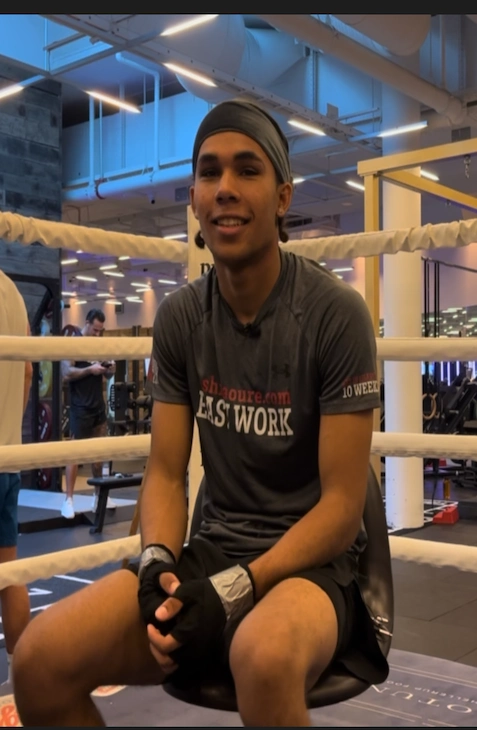

Lucas Esonga: Fremtidens Boksemester
En ung drøm om at dominere ringen
Lucas Esonga er en ung, ambitiøs bokser med en klar drøm: At blive en af de bedste i verden. Med støtte fra sin far, Ashira Oure Evans – en tidligere professionel bokser – træner Lucas dagligt for at finpudse sine teknikker og opbygge den styrke, disciplin og mentale fokus, der kræves i bokseringen. Fra tidlige morgener til sene aftentræninger har Lucas viet sit liv til sporten. Hans fars erfaring og vejledning har givet ham et solidt fundament, og sammen arbejder de på at gøre drømmen til virkelighed. For Lucas er boksning ikke bare en sport – det er en livsstil og en vej mod at skabe et navn for sig selv i bokseverdenen.
“Lucas Esonga i ringen: Dedikation og træning er nøglen til succes.
“Lucas Esonga i Aktion: Træningen bag Drømmen”
